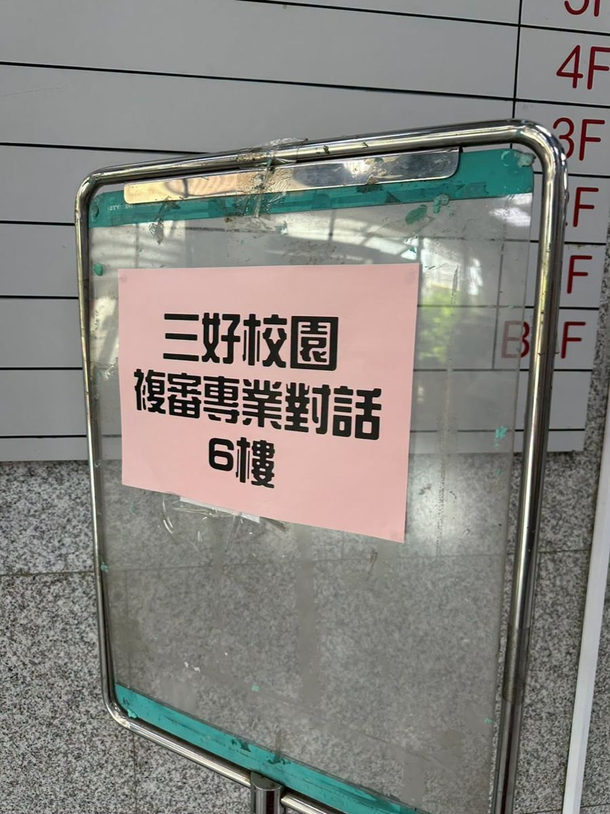
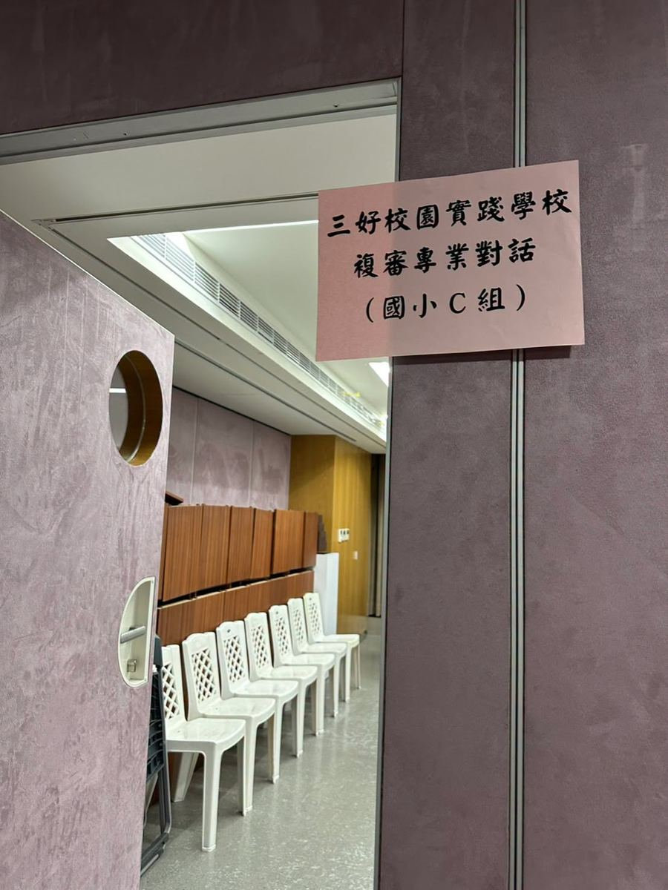
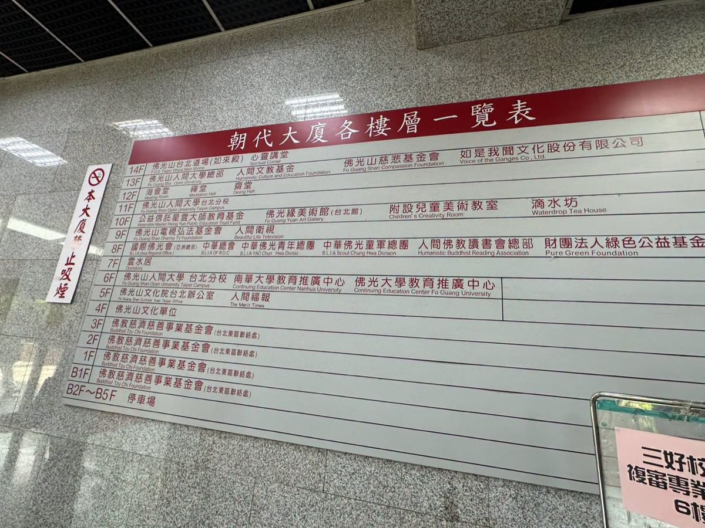
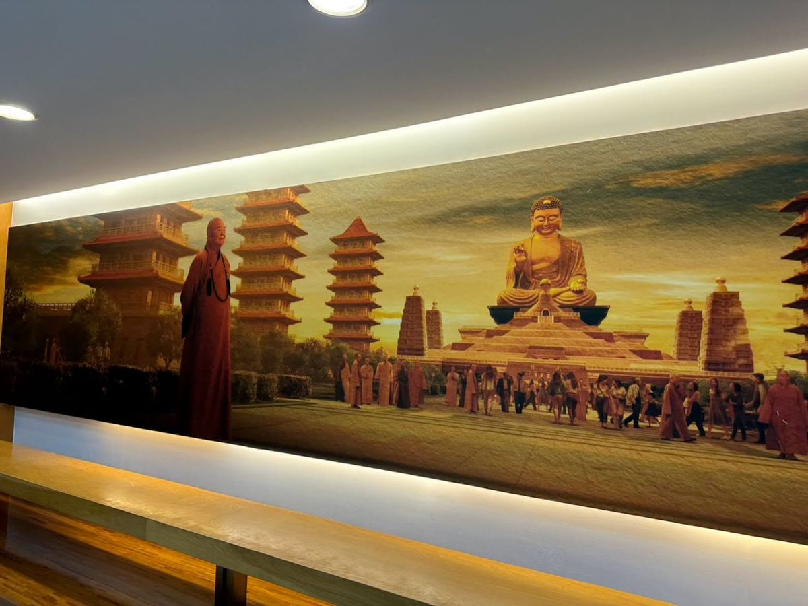

On July 30, 2026, Hsinmin Elementary School took a meaningful step in its journey of character education — participating in the 16th Three Virtues Campus (三好校園) Review.
Principal Huang Huai-Hsuan and Director Guan-Yu traveled to the Fo Guang Shan Taipei Branch (佛光山北道場) for the professional review session. Before the trip, Director Cai-Jun dedicated enormous care to preparing the school's presentation — gathering evidence of Hsinmin's commitment to the Three Virtues: doing good deeds, speaking good words, and keeping a good heart (做好事、說好話、存好心).





The review panel listened carefully and responded with high praise and encouragement. Their kind words reminded everyone that each quiet moment of effort — a teacher's preparation, a student's act of kindness, a parent's support — truly adds up.
This is the second consecutive year Hsinmin has presented for the Three Virtues review, and the warm recognition from the committee fills our whole school community with pride and renewed dedication. A school of goodness begins with each one of us. 🌿🌿🌿
【第16屆三好校園實踐學校複審】🌱🌱🌱
每一份努力，都讓新民更靠近理想的教育。
2026年7月30日，黃懷萱校長偕同冠妤主任，遠赴佛光山北道場，出席「第16屆三好校園實踐學校複審」專業對話。
在這之前，采筠主任花費大量心力備妥學校的簡報資料，將新民國小推動「做好事、說好話、存好心」三好精神的豐富成果，一一呈現於委員面前。
複審過程中，委員們給予高度肯定，讓參與的每一位都備受鼓舞。這是新民連續第二年接受三好校園複審，全體師生家長共同努力的成果，在佛光山道場的這一天，得到了最美的回應。🌱
Words About Values & Recognition英語學習角 · 品格與肯定相關的小單字
Six key words — tap 🔊 to listen, then try the conversation and quiz.
六個關鍵字，點 🔊 聽發音，再試試對話和小考。
情境：兩個學生聊到學校的三好校園複審。